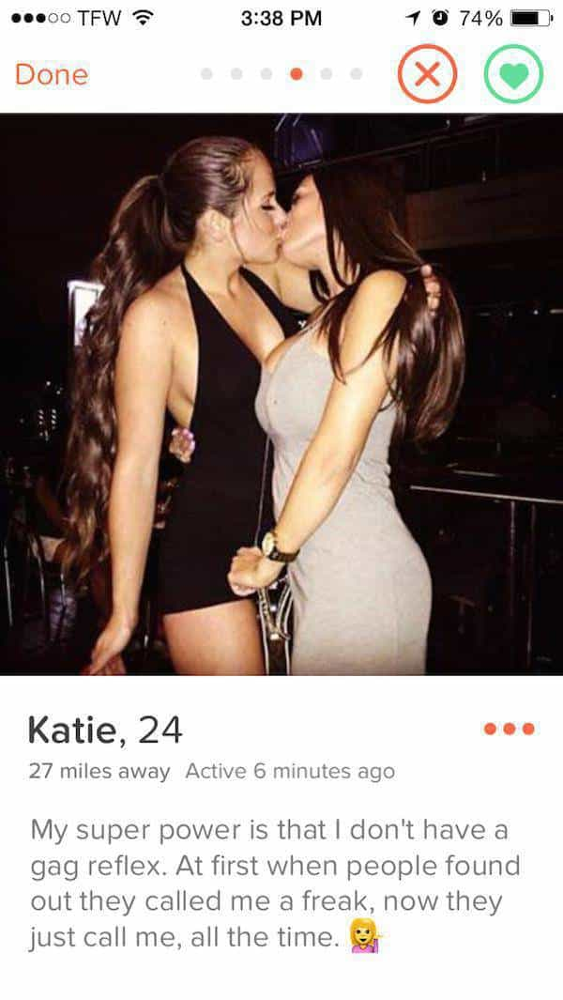

Kyle is an entrepreneur and nomad who has been living abroad since 2016. He blogs at This Is Trouble. Follow him on Facebook.


You can debate the merits of online, day, or night game for all of eternity. Regardless of what your personal preference is, the technology aspect of dating is here to stay. Probably forever, to be frank.
Unfortunately, this does remove a lot of control from men and places it squarely in the hands of women. Of course, women can’t be trusted with this—as evidenced by the ever declining nuclear family unit. At the same time, there isn’t much we as men can do it, short of continuing our movement. It’s one of those “play the hand you’ve been given” situations.
So whether you love or hate the technology aspect of dating, you might as well take advantage of it for the fast and easy sex. Here are a few thoughts on the state of online dating in 2017.
In some Asian countries, online dating has been incredibly popular for years. For example, sex dolls are so realistic in Japan, that people are losing their social skills at alarming rates. Online dating has been all the rage—it’s the “common” way to meet people.
This has started to also reach the West. No longer is it “weird” if you’ve met someone from online dating. Quite the opposite now, in fact. Telling someone you met your partner on the internet is just no big deal. It’s the norm.
Whilst online dating used to be reserved for the weirdos, it’s now completely socially acceptable. This is alarming in it’s own right, because of how quickly this attitude changed. I think it was “weird” to meet via online dating as recently as 2012 or 2013. Just five years later it’s cool. It just goes to show how many women have taken the follow the herd mentality throughout their entire life.
How it impacts you: On one hand, you don’t have to worry about being judged by any women for using online dating. At the same time, any girl you are meeting online has met dozens of guys before you, no doubt about it. She might make up some story about this being “the first time she’s tried online dating”—but I wouldn’t believe a word of that.
It used to be that showing a good shirtless picture would actually increase your matches, response rates, and number of dates. But then every guy started doing it. Once the floodgates were open on that, it became a turn-off.
It seems that sans-clothes photos are okay under a few circumstances:
How it impacts you: The game is simply always changing. What worked for night game many years ago doesn’t work today, and the same holds true for online game. Hell, this is the same case in entire countries—where men can observe all sorts of cultural changes in just a matter of years.
If you get out of the game for a consistent period of time (i.e. get in a relationship), then you can expect the next time you fire up your dating profile that the same tactics may not work. New platforms are introduced, someone posts their successful opener on a major forum, etc. You must continue to try new tactics to stay on top of the game.

Remember when Plenty of Fish was the biggest and best dating site (okay, maybe not the best) out on the market? Think about how many different platforms have passed through since then. In addition to the traditional dating sites, there are now plenty of new “alternative” methods.
There are always going to be new platforms popping up. You owe it to yourself to try most of them, simply because you don’t know what will and won’t take off. A year or so ago, I predicted that Bumble would be a catastrophic fail—because it requires women to make the first move. Most of you would agree that typically, if we put women in charge of the reproduction of our species, we would die out pretty quick.
However, it seems empowered 2017 girls are all on board the train of making the first move. I know several people who are having smashing success on the Bumble app.
Almost every line has been used to the moon and back these days. If you Google “online dating pickup lines” and start copy-pasting to everyone in your radius, she’ll have heard it before. Much like the classic PUA nightgame that was rampant in clubs years ago, girls used to respond simply for the novelty factor. These days, they tend to be constructed as weird, bizarre, and every girl’s favorite word for a guy she doesn’t like—“creepy”.
Lines are the quick fix to actually testing different profiles, openers, etc. Yes, it’s a grind—just like any type of game. With that being said, it’s important to note…

If there’s anything I’ve learned in the last few years, it’s that being genuinely “normal” and confident actually does work very well. Specific lines only work so long until they become played out. I think it’s a reason you see many PUAs ultimately being distraught with the life. When you put your long-term happiness, stability, and mood based off of your results with women—guess what—you’re destined to become miserable. Can women really be relied on for anything? Hardly.
Genuine time, effort, and hardship is required to make long term changes in your life. In regards to online dating, it means this: if you take the time to build a cool life for yourself, it will show through in your profile. This means you’ll get more responses. This means you will have more success on dates. This means you will have more harem members easily accessible. All of this comes down to not having to treat online dating as a job—but as fun. And that’s what girls are looking for these days.
They want to be unplugged from their drab day-to-day life office work, and the cool guy off an app is the way to make it happen.
Therefore, if you take the time to build yourself up, it’s going to show. Online dating and other forms of game will all become much, much easier for you. You’ll have the cool photos of your travels on your profile, and speak a second language fluently. You insightful things to say from years of experience in the game, and you’ll know exactly what buttons to press when you’ve got her out on a date.
But most importantly, you have to remember that it’s all just a game.
If you want to understand the underlying core concepts of online dating, you need to read Cracking OkCupid. For more advice about dating, check out my blog This Is Trouble.
Read More: Why Major Metropolitan Cities Are Hell For Dating